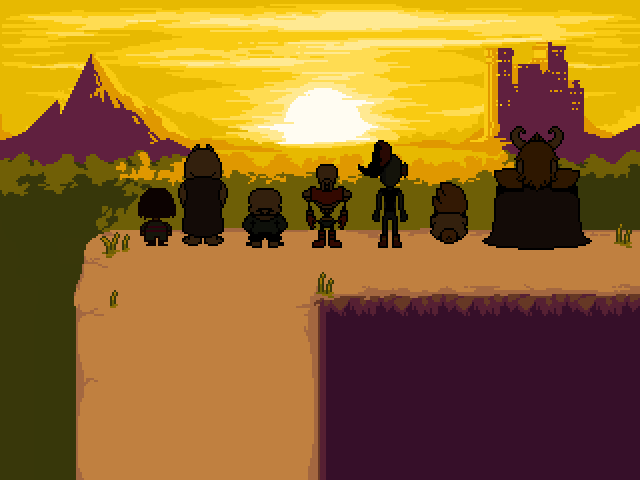

Sans is the older brother of Papyrus and the first character you encounter when first leaving the Ruins. Sans is an essential character to the story of undertale and he is of second importance only to the player. Within undertale sans is seen as lazy and often plays slightly inconvenient pranks, but he is the one in chareg of keeping an eye on the player. It is known sans has a scientific background as a quantum mechanics book can be found in his workshop. One of Sans's most important jobs is his final judgement at the end of the game where he talks with the player about how much LOVE they have.

In Undertale's neutral route Sans firstly meets the protagonist outside the ruins and they interact all troughout the city of snowdin. Before the battel of Papyrus he appears shortly to play the trombone. If after that the player decides to kill Papyrus Sans will not appear again until the Last Corridor where the judgement will happen. If Papyrus is not killed the player will interact with sans both in Waterfall and in Hotland. Later in MTT Resort Sans and the player have a bite to eat where sans tells the player that if he hadn't made the promise to protect any human that left the Ruins, the player would be "dead where [they] stand". After that the player will head to the Last Corridor where the judgement will happen.
In this final judgement Sans explains that EXP and LOVE are acronyms:
During the True Pacifist Route, Sans is missing from the Last Corridor but he does appear before the final battle against Asriel where he first sees Toriel's face. After that he apears as one of the lost souls with Papyrus in the battle against Asriel. After Asriel's defeat he heads to the surface alongside all the other monsters.
In the genocide route Sans introduces himself as normal and keeps an eye on the player but he asks the player to continue pretending to be human. If the player decides to abort the genocide route by sparing Papyrus, sans expresess his respect in waterfall and continues as a normal neutral route. But if the Player does kill papyrus sans is not seen until the Last Corridor. When the player reaches the Last Corridor Sans does not judge them he instead affirms the player has been busy. Before the battle begins, Sans apologizes to Toriel for breaking his promise to her.
The battle against sans is the final battle of the genocide route and is by far the hardest encounter of the whole game. Sans is the only enemy in undertale which can dodge the player's attacks mitigating the downsides of his 1 HP. He also only does 1 point of AT but he has the ability to ignore invincibility frames so he deals 1 point of damage every frame. In addition, he also the only enemy who inficts KARMA damage when he attacks, in undertale KARMA damage works as poison slowly draning the player's hp even after the use of a healing item. By combining these abilities with the complex attack patterns he is known for, his battle totaly outclasses any other in terms of difficulty.
Undertale AUs or alternate universes have recently emerged from the undertale fandom, undertale AUs first emerged from people imagining their favourite characters in situations difering from the classic Undertale story. There are many AUs each with loads of characters but by far the character with the most alternate versions is Sans. These are the main AUs:

Underswap is an AU where all the main characters of undertale have swaped personalities with their counterpart, for example Sans and Papyrus, this AU is generally associated with more wholesome content.

Underfell is an AU where the main character's moralities have been swaped meaning originaly kind monsters become evil and vice versa.

Horrortale is an AU set many years after a neutral run of the game where the monsters have gone insane as a result of the shutdown of the CORE (reactor that provides power to the underground) and the severe lack of resources available.

Ink sans is an aternate version of sans which has the ability to create objects out of ink, he serves as the protector of AUs in general and he encourages people to create their own Undertale AU. Ink sans also has his own theme song and a custom coded fight fangame.

Error sans is an aternate version of sans which is said to have fallen into a dimension between universes and gliched beyond repair. Error Sans now dedicates himself to clense the multiverse of all AUs.
Name: Sans
Address: Papyrus' house
Location: Snowdin
Contact method: Phone ran out of batteries
this website © 2023 is based on w4rner's
'Ninety Five' template after Tamara Munzner's and therefore is licensed under CC BY-SA 4.0